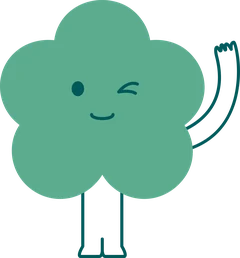

Do uzupełnienia: zdjęcia sal, ogrodu i zajęć w Lucky OKRUSZAKACH. Poniżej zdjęcia poglądowe, pokazują tylko, jak będzie działać galeria (przesuwanie palcem i myszką, powiększanie po kliknięciu).
Więcej zdjęć z życia żłobka na naszym profilu na Facebooku.